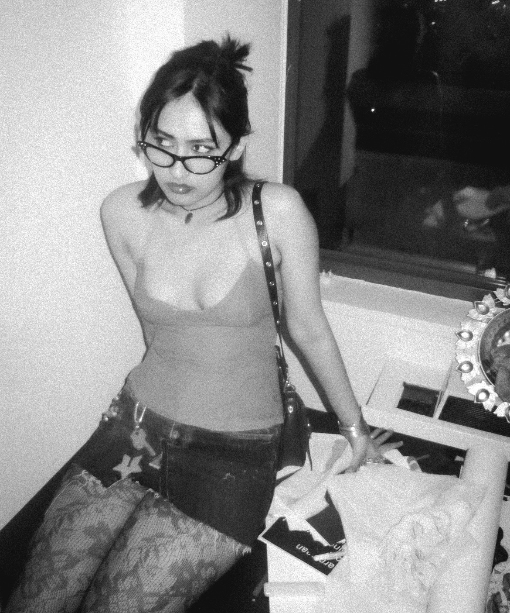

hi! i'm Diya.
i'm a communication design sophomore at the new school, and this is a website for my interaction design studio.
the goal was to come up with a typographic solution for the words/phrases/concepts/ideas that the class came up with in association to the word, love.
I chose to bring together all the poetry we collected— a collection of love, longing, and everything in between. Poems about love always evoke a bittersweet nostalgia for me, bringing up emotions that feel both distant and deeply familiar. There’s something timeless about the way love is expressed through poetry,
how words can hold the weight of devotion, heartbreak, and hope all at once. I wanted to create a space that focuses solely on the poetry itself, free from distraction—just the words, and the emotions they carry.
A space to sit with them, get lost in them, and maybe even find a little piece of yourself in them.
diyadhiman17@gmail.com
+1 9176576910
+91 8666949592